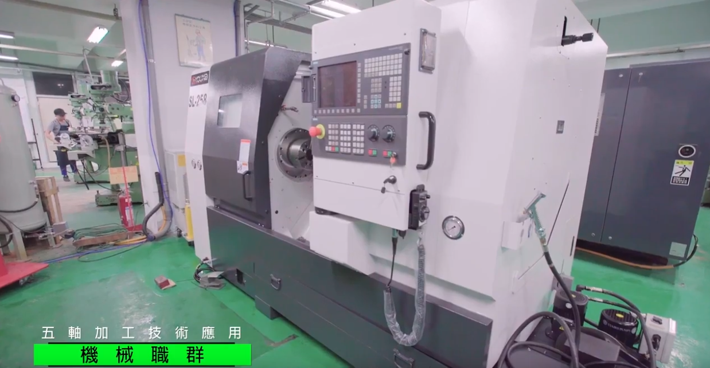

電腦數值控制機械班(CNC)

緣由：我國數值控制機械精密加工，已是業界標準之加工方式，不但可提高工件之精密度，減少人為加工錯誤之發生，亦可縮短加工時間並大量生產，大大降低產品之成本，提高競爭力。因此從事數控機械貿易、數控機械製作、數控機械加工、產品設計、模具等業界之從業人員，均需具備此方面之知識及技能，故前述行業用人需求殷切。
訓練目標：一、具備傳統車、鉗、銑、磨基礎知識及實作技能。 二、能熟練使用Solidworks及MASTERCAM軟體 三、能熟練操作CNC銑床及CNC車床加工，並達到技能檢定乙級程度。 四、能熟練編寫CNC銑床及CNC車床程式。 五、輔導考照：CNC銑床乙級，並使學員有機會參與檢定考試服務之見習。
就業展望：可從事切削中心機、CNC銑床、CNC車床等電腦數值控制機械(數控工具機)之加工。